<!DOCTYPE html>
<html lang="en">
  <head>
    <meta charset="utf-8">

    <!-- You can add coding to connect to online fonts like Google Fonts OR download and place them in your fonts folder -->
    <link rel="stylesheet" href="css/fonts/fonts.css">
    <link rel="preconnect" href="https://fonts.googleapis.com">
<link rel="preconnect" href="https://fonts.gstatic.com" crossorigin>

    <!-- Remember to connect your CSS file -->
    <link rel="stylesheet" href="css/main.css">
    <link href="https://fonts.googleapis.com/css2?family=Roboto+Condensed&display=swap" rel="stylesheet">
<!doctype html>
<html lang="en">
    <meta charset="utf-8">
    <meta name="viewport" content="width=device-width, initial-scale=1">
    <title>Olsen-JNL 221 Final Project</title>
    <link href="https://cdn.jsdelivr.net/npm/bootstrap@5.3.2/dist/css/bootstrap.min.css" rel="stylesheet" integrity="sha384-T3c6CoIi6uLrA9TneNEoa7RxnatzjcDSCmG1MXxSR1GAsXEV/Dwwykc2MPK8M2HN" crossorigin="anonymous">
  </head>
  <body>
    <script src="https://cdn.jsdelivr.net/npm/bootstrap@5.3.2/dist/js/bootstrap.bundle.min.js" integrity="sha384-C6RzsynM9kWDrMNeT87bh95OGNyZPhcTNXj1NW7RuBCsyN/o0jlpcV8Qyq46cDfL" crossorigin="anonymous"></script>
  </body>
</html>
    <!-- Don't forget your Page Title -->
    <title></title>
  </head>

  <body>
    <nav>
      
       

        <!-- Psst! You can also replace the image logo above with something from Iconmonstr.com, followed by some HTML for your site name that you style in CSS :-) -->
<div class="subhead">
   <h3>MCKENZIE OLSEN</h3>
        <p>JNL 221-FALL SEMESTER '23 FINAL PROJECT</p></div>

        <!-- Consider adding navigation to link to other positions on the page using Anchor and Name tags -->

    </nav>

    <article>

    <!-- Following elements are optional and should be styled with CSS to your liking -->

      <header>
        <h1>ACC Men's and Women's Basketball Program Analysis</h1>
        <p>A detailed look at the basketball finances within the Atlantic Coast Conference from 2017 to 2021.</p>
        <p>McKenzie Olsen<br>Newhouse Student</p>
        <p>Posted on 12/18/2023, at 11:59 p.m.</p>
      </header>

    <!-- Place all photos in the images folder and make sure they are named properly so that they display in preview -->

<div id="carouselExample" class="carousel slide">
  <div class="carousel-inner">
    <div class="carousel-item active">
      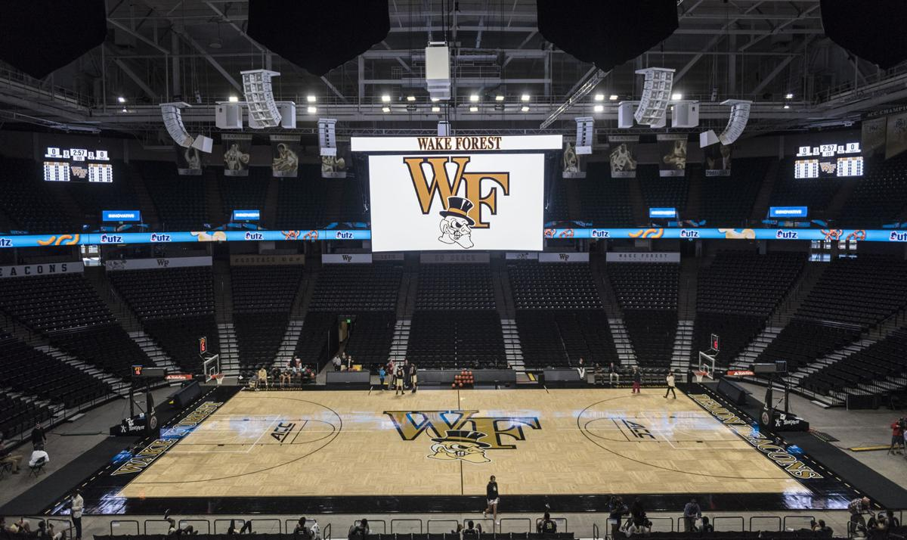
    </div>
    <div class="carousel-item">
      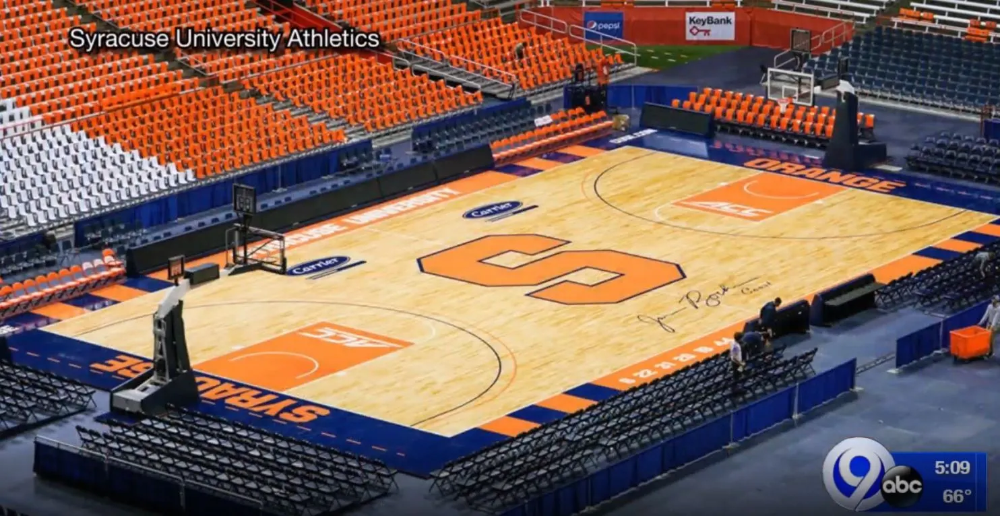
    </div>
    <div class="carousel-item">
      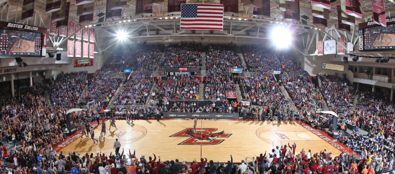
    </div>
    <div class="carousel-item">
      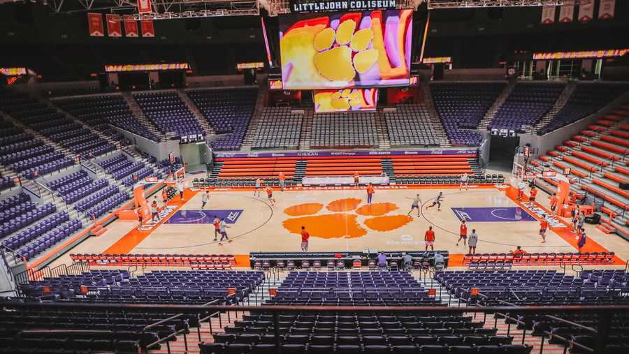
    </div>
    <div class="carousel-item">
      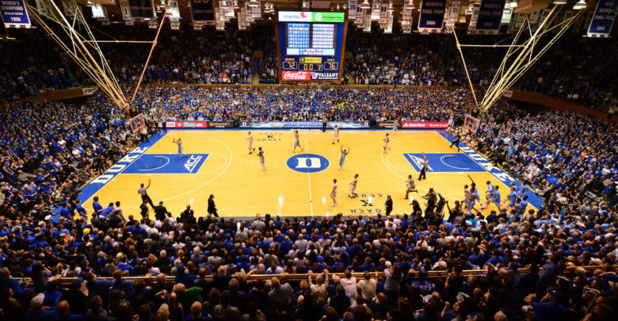
    </div>
    <div class="carousel-item">
      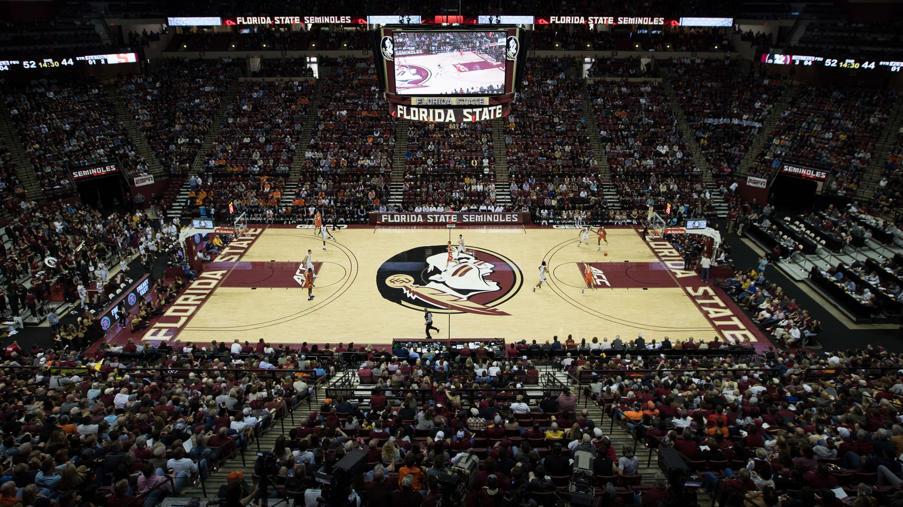
    </div>
    <div class="carousel-item">
      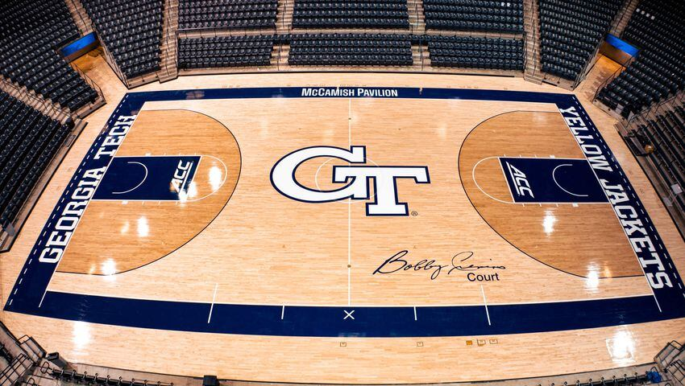
    </div>
    <div class="carousel-item">
      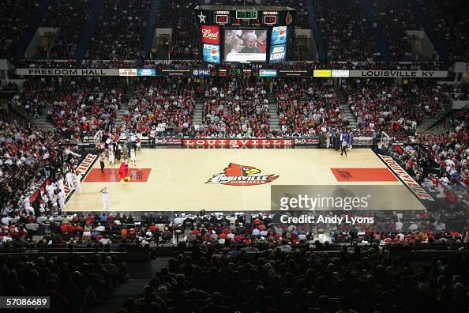
    </div>
    <div class="carousel-item">
      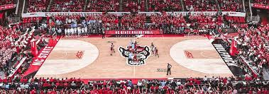
    </div>
    <div class="carousel-item">
      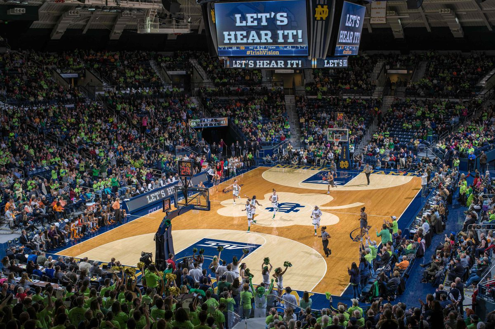
    </div>
    <div class="carousel-item">
      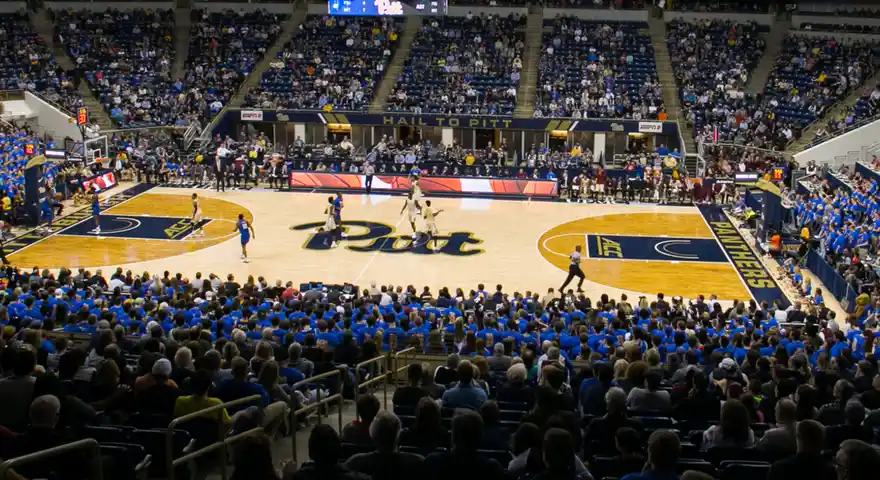
    </div>
    <div class="carousel-item">
      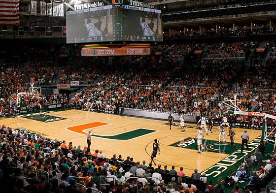
    </div>
    <div class="carousel-item">
      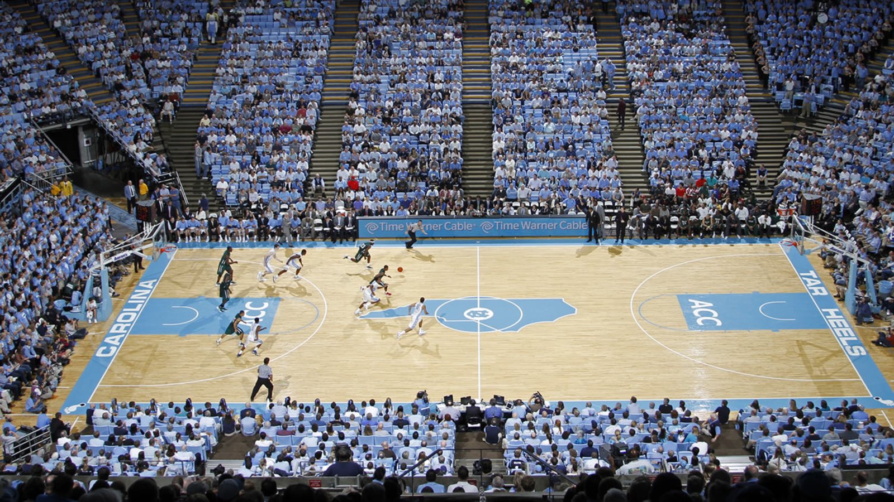
    </div>
    <div class="carousel-item">
      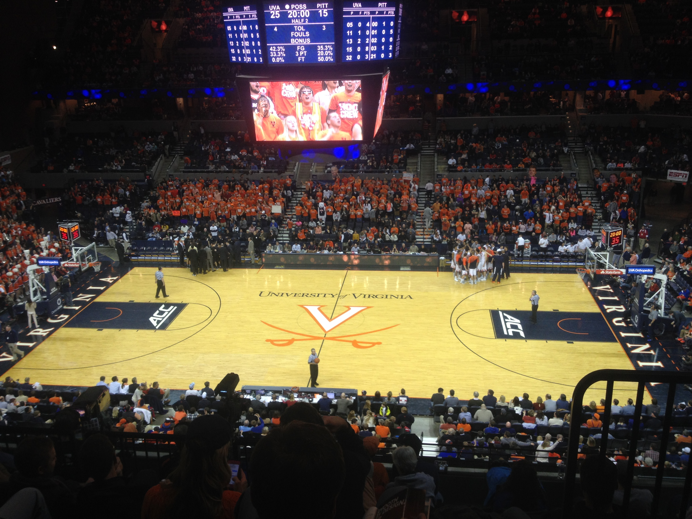
    </div>
    <div class="carousel-item">
      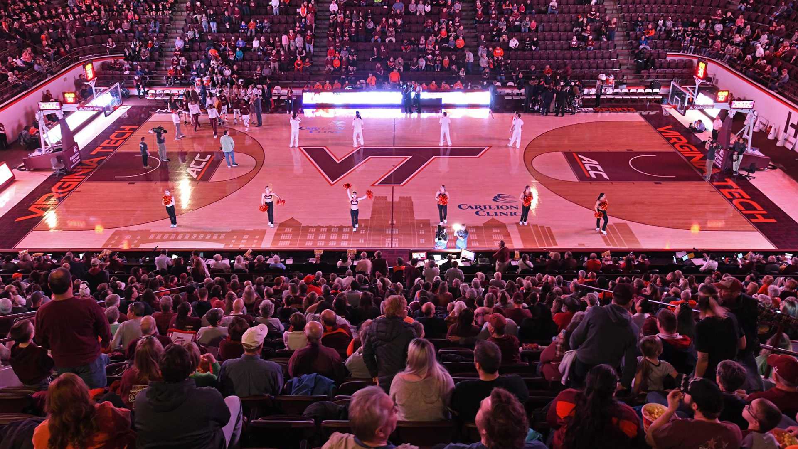
    </div>
  </div>
  <button class="carousel-control-prev" type="button" data-bs-target="#carouselExample" data-bs-slide="prev">
    <span class="carousel-control-prev-icon" aria-hidden="true"></span>
    <span class="visually-hidden">Previous</span>
  </button>
  <button class="carousel-control-next" type="button" data-bs-target="#carouselExample" data-bs-slide="next">
    <span class="carousel-control-next-icon" aria-hidden="true"></span>
    <span class="visually-hidden">Next</span>
  </button>
</div>
      <p class="caption">Basketball courts at all 15 ACC schools. (See data diary for source list)</p>

    <p>Founded in 1953, the Atlantic Coast Conference(ACC) formed their own conference which to this date consists of 15 Universities which compete under the NCAA Division 1 Subdivision. 
</p>
<p>
  Even with the establishment of Title IX, collegiate sports face a gender gap that has been prevalent throughout history. One collegiate sport that has great differences in team revenue and expenses are men’s and women’s basketball. Data pulled from the Equity in Athletics department gave data of every Atlantic Coast Conference men’s and women’s basketball team from 2017 to 2021.
</p>

      <iframe title="ACC Schools By Undergraduate Size" aria-label="Map" id="datawrapper-chart-Xgyzy" src="https://datawrapper.dwcdn.net/Xgyzy/1/" scrolling="no" frameborder="0" style="width: 0; min-width: 100% !important; border: none;" height="572" data-external="1"></iframe><script type="text/javascript">!function(){"use strict";window.addEventListener("message",(function(a){if(void 0!==a.data["datawrapper-height"]){var e=document.querySelectorAll("iframe");for(var t in a.data["datawrapper-height"])for(var r=0;r<e.length;r++)if(e[r].contentWindow===a.source){var i=a.data["datawrapper-height"][t]+"px";e[r].style.height=i}}}))}();
</script>
<p>

These 15 ACC schools: Boston College, Clemson, Duke, Florida State, Georgia Institute of Technology, North Carolina State, Syracuse, Louisville, Miami, North Carolina, Notre Dame, Pittsburgh, Virginia, Virginia Polytechnic Institute, and Wake Forest University, all showed the disparities amongst men’s and women’s basketball programs regarding their team revenue, operating expenses, and team expenses. 

The ACC school with the greatest average Undergraduate size from 2017-2021 was FSU at 29,397, comparatively the smallest undergraduate size during the 5 year span was Wake Forest at 5,242.

</p>
   

      <iframe title="ACC Schools Basketball Revenue by Men's &amp;amp; Women's Teams from 2017-2021" aria-label="Stacked Bars" id="datawrapper-chart-dheYZ" src="https://datawrapper.dwcdn.net/dheYZ/1/" scrolling="no" frameborder="0" style="width: 0; min-width: 100% !important; border: none;" height="634" data-external="1"></iframe><script type="text/javascript">!function(){"use strict";window.addEventListener("message",(function(a){if(void 0!==a.data["datawrapper-height"]){var e=document.querySelectorAll("iframe");for(var t in a.data["datawrapper-height"])for(var r=0;r<e.length;r++)if(e[r].contentWindow===a.source){var i=a.data["datawrapper-height"][t]+"px";e[r].style.height=i}}}))}();</script>

      <p>The total ACC men’s and women’s basketball team revenue from 2017-2021 all were larger for the men’s teams programs. The men’s basketball revenue ranged from $172,906,660 at Duke to $30,326,065 at Notre Dame. Whereas the ACC women’s basketball total revenue was far less, standing at the largest total from FSU at $24,426,664 to the least total revenue at Virginia Tech at $4,031,644.
</p>
<iframe title="ACC Men's and Womens Basketball Expenses vs. Revenue in 2021" aria-label="Split Bars" id="datawrapper-chart-YaoLe" src="https://datawrapper.dwcdn.net/YaoLe/1/" scrolling="no" frameborder="0" style="width: 0; min-width: 100% !important; border: none;" height="588" data-external="1"></iframe><script type="text/javascript">!function(){"use strict";window.addEventListener("message",(function(a){if(void 0!==a.data["datawrapper-height"]){var e=document.querySelectorAll("iframe");for(var t in a.data["datawrapper-height"])for(var r=0;r<e.length;r++)if(e[r].contentWindow===a.source){var i=a.data["datawrapper-height"][t]+"px";e[r].style.height=i}}}))}();</script>

      <p>Comparatively, the total ACC Men’s and Women’s basketball expenses vs. revenue for 2021 displays how much more each men’s program spends annually and how much larger the total revenue is for the men’s teams. The largest annual team expense in 2021 comes from Duke at $28,019,888; similarly they have the highest total team revenue at $45,108,538. On the other hand the greatest women’s basketball team expense for 2021 is Duke at $7,037,561, whereas the greatest total team revenue was Louisville at $6,914,744. 

</p>

      
      <iframe title="ACC Men's and Women's Basketball Total Team Operating Expenses for 2017 &amp;amp; 2021" aria-label="Election Donut" id="datawrapper-chart-E637f" src="https://datawrapper.dwcdn.net/E637f/1/" scrolling="no" frameborder="0" style="width: 0; min-width: 100% !important; border: none;" height="563" data-external="1"></iframe><script type="text/javascript">!function(){"use strict";window.addEventListener("message",(function(a){if(void 0!==a.data["datawrapper-height"]){var e=document.querySelectorAll("iframe");for(var t in a.data["datawrapper-height"])for(var r=0;r<e.length;r++)if(e[r].contentWindow===a.source){var i=a.data["datawrapper-height"][t]+"px";e[r].style.height=i}}}))}();</script>


      <p>Within the 5 year span; the highest total team operating expense for ACC men’s and women’s basketball was held by a different school during the years 2017 and 2021. The largest team operating expense in 2017 belonged to both Duke and Notre Dame. Duke men’s basketball total team operating expense in 2017 was $3,522,414; whereas the leading women’s team operating expense was Notre Dame at $1,828,586. On the other hand, in 2021, the program with the highest team operating expense for the men's team was UNC at $5,855,574; a $3,251,387 increase from 2017. Whereas the 2021 women’s team with the highest operating expense was Louisville at $1,880,949, a $935,715 increase from 2017. In both 2017 and 2021, every ACC men’s basketball program had higher operating expenses than women’s teams besides Notre Dame. The Notre Dame women’s basketball team operating expenses in 2017 was $8,499 dollars greater than the men’s operating expenses in 2017.</p>


      <p>According to Heather Pallone, Assistant Director of Athletic Operations at Syracuse University, this data stands very similar to her findings and experiences working with ACC men’s and women’s basketball programs over the past 3 years.</p>

      <p>WORD COUNT: 532</p>

      </article>

      <!-- Footer may or may not be needed -->
      <footer>
        <p>For more information about the author</p>
        <h2><a href="https://cuse.com/sports/womens-lacrosse/roster/mckenzie-olsen/23039">Syracuse Athletics</a></h2>

        <p>For more information about the data analysis</p>
        <h2><a href= "https://docs.google.com/spreadsheets/d/10Z3VY0l4L-Rt40PEw_yCYG6tip9Sl504n-e1YwwvTN0/edit?usp=sharing">Google Sheet </a></h2>
      </footer>


  
  </body>
</html>
